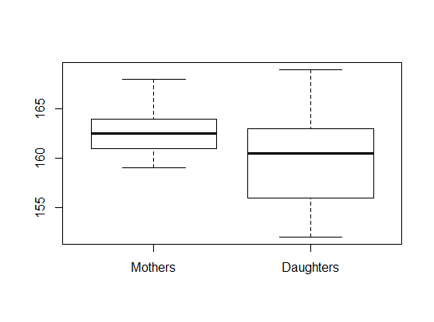
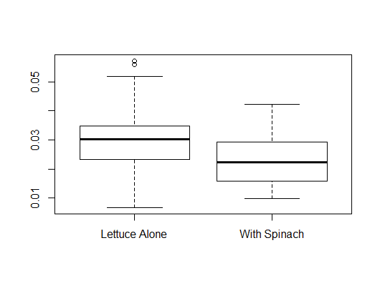
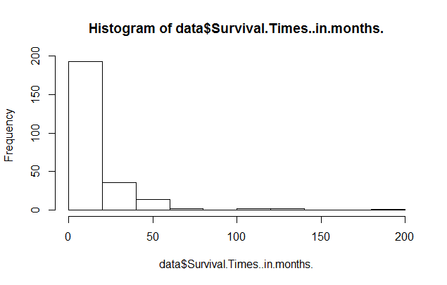
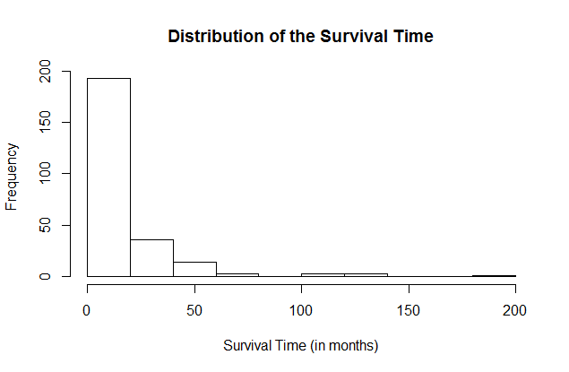
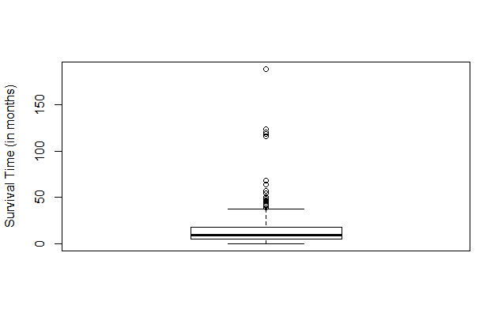
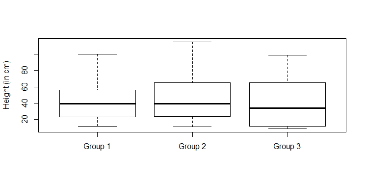
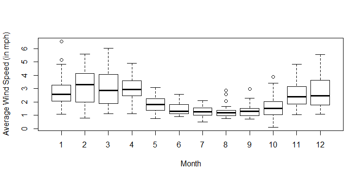
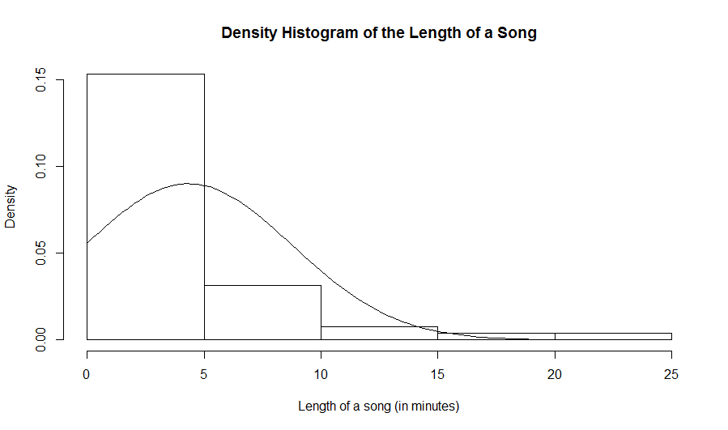
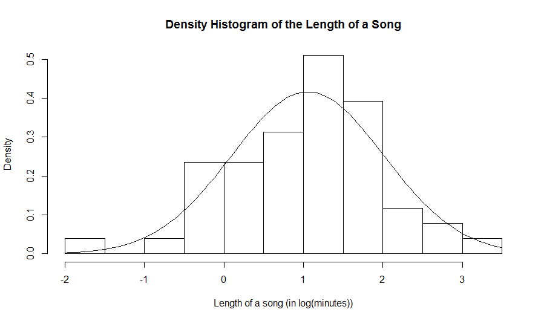
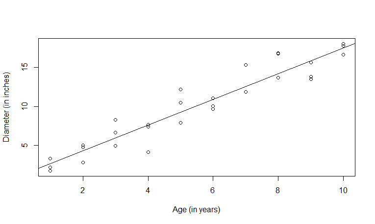

Introduction to R
En français
Table of Content
Downloading and Installing R
Example 1: Working at the console
Example 2: Binomial and Normal distributions
Example 3: Descriptive Statistics
Example 4: R Editor window
Example 5: Importing data from a file
Example 6: A few graphs: histogram and boxplot.
Example 7: Side-by-side boxplots
Example 8: Operations on numerical vectors
Example 9: Assessing Normality (histogram)
Example 10: Assessing Normality (quantile-quantile plot)
Example 11: One sample t-test
Example 12: Paired t-test
Example 13: Unpaired t-test
Example 14: Contingency Tables
Example 15: Correlation and Simple Linear Regression
Downloading and Installing R
Educational video: Downloading and Installing R
Summary of the video:
How to download and install R
Getting started with R (Working at the R console)
Educational video: Working at the R console
Summary of the video:
Here are a few things you need to know to get started with R
The arrow (>) that appears when R is opened is the prompt to start entering commands.
can be used as a calculator. Simply enter what you would like to solve and press enter. For example
> log(5)-2.5^2
[1] -4.640562
R understands this as the natural log (ln) and not log to the base 10.
Numerical and Categorical variables can constructed in R as objects that are called vectors.
- Let's say we are measuring the blood pressure of 3 individuals: Alice, Bob and Celine. The vector containing and identification of the subjects is a categorical variable.
- We will assign the identifications to the vector called
subject. To let R know about this assignment, we input:
> subject = c("Alice", "Bob", "Celine")
We use the quotation marks to tell R that it is a text.
Note that c is the function for combining.
- We will create a numerical vector for the blood pressures that were measured. We call this vector
BP.
BP = c(112, 125, 161)
The length of this vector is 3.
To display an object like a vector, simply enter the name you assigned to it.
> subject
[1] "Alice" "Bob" "Celine"
> BP
[1] 112 125 161
To show the list of vectors already entered, enter ls() at the prompt.
> ls()
[1] "BP" "subject"
To remove an object (e.g. a vector), enter rm(name of the object that you would like to remove). In our case, let's say
> rm(subject)
Note that after doing this, using the ls() command will no longer include subject among the list of objects.
> ls()
[1] "BP"
Binomial and normal distributions
Educational video: Binomial and the Normal Distributions
Summary of the video:
Note: The number sign is used to enter comments in R. R does not interpret any comments.
This is an example of how a comment will be written in R:
> # I am studying Biostatistics
Binomial Distributions
With R, the binomial distribution is called binom. A prefix 'd' or 'p' can be used with binom.
dbinom is the probability mass function (pmf). Its usage is dbinom(x, n, p), where x is a value in the range
of the random variable, n is the number of trials and p is the probability of success.
Example: Compute the probability that X=20, where X has a binomial distribution with n=30 and p=0.75
Solution: We have P(X=20)=0.0909. Here is the corresponding R output.
> dbinom (20, 30, 0.75)
[1] 0.09086524
Suppose now that we want to compute that X is between 20 and 25 (inclusively). We can compute the probability mass for each of the values 20, 21, ..., 25 as follows.
> dbinom (20:25, 30, 0.75)
[1] 0.09086524 0.12980749 0.15930919 0.16623567 0.14545621 0.10472847
The command 20:25 creates a vector that contains the integers from 20 to 25. R will compute the pmf for each of the components of the vector.
To add up all the individual probabilities that R generates, we use the sum command.
> sum(dbinom(20:25, 30, 0.75))
[1] 0.7964023
So P(20 ≤X ≤25)=0.7964.
pbinom is the cumulative distribution function (cdf). To compute P(X ≤ 25), where X has a binomial distribution with n=30 and p=0.75, we use:
> pbinom (25, 30, 0.75)
[1] 0.9021304
Thus, P(X ≤ 25)=F(25)=0.9021.
Assuming that we want P(20 ≤ X ≤ 25), we can use the cdf to do the computation. We have P(20 ≤ X ≤ 25)=F(25)-F(19)=0.7964. Here is the computation with R.
> pbinom (25, 30, 0.75)-pbinom (19, 30, 0.75)
[1] 0.7964023
Notice that we get the same value as the sum of the probability masses for x=20 to x=25.
Normal Distributions
The R name given to this distribution is norm.
Assuming we are working with a mean of 25 and a standard devation of 5.25, let's compute the probability that our normal distribution would be at most 20, i.e. P(X ≤ 20).
pnorm is the cumulative distribution function. Its usage is pnorm(x, mean, sd), where mean is the mean of the distribution and sd is the standard deviation of the distribution.
We want P(X ≤ 20)=F(20)=0.1705. Here is the computation with R.
> pnorm(20, 25, 5.25)
[1] 0.1704519
Suppose we want P(20
> pnorm(25, 25, 5.25) - pnorm(20, 25, 5.25)
[1] 0.3295481
qnorm is the quantile function. Its usage is qnorm( probability, mean, sd).
Say that we are interested in the 5th percentile, that is a value q such that 0.05=P(X ≤ q), where X has a normal distribution
with mean 25 and standard deviation 5.25. We can use the following command.
> qnorm(0.05, 25, 5.25)
[1] 16.36452
So the 5th percentile is around 16.36.
Suppose that we want to compute the first quartile (which is approximately 21.46) and the third quartile (which is approximately 28.54). That is, we want the 25th percentile and the 75th percentile. We use:
> qnorm(0.25,25,5.25)
[1] 21.45893
> qnorm(0.75,25,5.25)
[1] 28.54107
Suppose that we want the interquartile range, i.e. the distance between the third quartile and the first quartile. We use:
> qnorm(0.75,25,5.25) - qnorm(0.25,25,5.25)
[1] 7.082142
Descriptive Statistics
Educational video: Descriptive Statistics
Summary of the video:
These are the list of functions to use when working with Descriptive Statistics in R. The following are some of the functions;
ls() - Used to display a list objects previously defined during the current R session. In the video, we see that an object x existed. To display x,
simply enter x at the prompt. We obtain:
> x
[1] 12 13 11 9 2 75 125 35
Remark: We had previously defined this numerical vector with the following command: x=c(12, 13, 11, 9, 2, 75, 125, 35)
is.vector(x) - To ask R if the object x is a vector (True or False).
is.numeric(x) - To ask R if the object x is numeric (True or False)
- If both answers are true, we can conduct descriptive statistics on the numerical vector.
length(x) - Provides the length of the vector x, which is the number of components (sometimes this correspondes to the sample size).
summary(x) - gives a summary of some descriptive statistics of x; mean, median, 1st and 3rd quartile, the minimum and the maximum.
- To compute particular descriptive statistics, we use the following functions:
mean(x) - for the mean of x
median(x) - for the median of x
var(x) - for the variance of x
sd(x) - for the standard deviation of x
IQR(x) - for the interquartile range of x
Note: IQR must be written in upper case.
range(x) - gives a vector the contains two values. In component 1, we have the minimum. In component 2, we have the maximum.
For the range defined as the distance between the minimum and the maximum, use the following command (assuming that x is the numerical vector):
> range(x)[2] - range(x)[1]
The indicices for the components (here it is 2 and 1) should be put in square brackets.
sort(x) - arranges the numerical values from smallest to largest
quantile(x) - to get some percentiles (also known as sample quantiles). Here is an example:
> quantile(x)
0% 25% 50% 75% 100%
2.0 10.5 12.5 45.0 125.0
We notice that the first quartile is 10.5, the third quartile is 45 and the median is 12.5.
Remark: R does not use, by default, the same formula as us to compute the quartiles. To force R to compute the quartiles as we learned in class, we use quantile(x,type=6).
For our example, we get
> quantile(x,type=6)
0% 25% 50% 75% 100%
2.0 9.5 12.5 65.0 125.0
We can add a second argument to the quantile function to change the order of the quantile.
> quantile(x, c (0.05, 0.95))
This will give the 5th and 95th percentile of the numerical vector x.
boxplot(x) - to construct a boxplot of the numerical vector x. A boxplot is displayed in the graphics window.
boxplot(x)$out - to display the outliers of the numerical vector x.
Keywords: Numerical vector, measures of central tendency, measure of variability, descriptive statistics with R.
R Editor Window
Educational video: R editor window
Summary of the video:
Instead of working in the R console, it is sometimes more efficient to enter and edit your commands in an R editor window.
To open an editor window in R,
Go to R Gui
Click on File, then new script (in windows) or new document (on a Mac)
Enter your commands on this page.
Select the commands that you want to submit and use CTRL-R (in windows) or CMD-ENTER (on a Mac) to submit the commands at R prompt.
To save commands on the R Editor Window,
Go to R Gui
Click on File, then Save as
Use the extension .R to save. For example, the file name can be Rstuff.R.
Importing data from a file
Educational video: Importing data from a file
Summary of the video:
- We will import data from a tab-delimited text file. We can construct a tab-delimited text file with a spreadsheet, e.g. Excel or Open Office Calc (which is
free).
- The columns are the variables. The rows are the statistical units. In our first example, we have mother-daughter pairs that are the statistical units.
We will use two numerical variables to describe the units: the mother's height in cm and the daughter's height in cm.
- We saved the excel worksheet as a tab-delimited text file called MOTHERDAUGHTER.txt.
- With R, use the
read.table function to import data from a text file.
It will create a dataframe object with R.
Any name can be given to the data frame. In the example below, we will import the data from the following file: MOTHERDAUGHTER.txt. [Right-click
on the file and SAVE AS (on a Mac try CTRL with the mouse click and SAVE AS)]
> data = read.table(file.choose(), header=TRUE, sep="\t")
Note that data is the name given to the data frame.
Arguments:
file.choose(): This forces R to open a window to browse for the document.
header=TRUE: By default, R makes the assumption that the columns in the file are unnamed. That is, the first statistical unit is in the first row.
However, we will prefer to give names to our variables. To name the variables, we will put the names in the first row of the file. So this argument indicates to R
that the first row will contain the names of the variables.
sep="\t": By default R uses space to delimit columns. The argument sep="\t" is to use tabulations (tabs) to delimit the columns.
- When the command is entered, a window opens so that we can browse for the file. Select the file and click on open. Now, the data has been imported
with R.
Working with the dataframe ...
- We can verify that
data is a data frame.
> is.data.frame(data)
[1] TRUE
R displays TRUE, so data is a data frame, i.e. a table with the statistical units in the rows and the variables in the columns.
- We use the function
names to display the names of the columns. Below, we display the names of the columns for the dataframe data:
> names(data)
[1] "Daughter" "Mother"
We observe that there are two columns. They are called: "Daughter" and "Mother".
- To access a column in a dataframe (without spaces), we use the name of the dataframe with a dollar sign followed by the name of the column. Below, we display the column called "Daughter"
from the dataframe
data:
> data$Daughter
[1] 160 165 156 169 152 156 162 156 161 160 164 162
We could also access the column with its index instead of its name.
> data[,1]
[1] 160 165 156 169 152 156 162 156 161 160 164 162
We use square bracket to input the index. Here we used [,1] to get all the rows but only the first column. Below, we display the second column of the dataframe data
> data[,2]
[1] 163 165 162 161 161 160 164 159 164 161 163 168
The second column is called "Mother", so here we use the name to access the 2nd column:
> data$Mother
[1] 163 165 162 161 161 160 164 159 164 161 163 168
- Here we use the function
summary to display some descriptive statistics for the heights of the mothers.
> summary(data$Mother)
Min. 1st Qu. Median Mean 3rd Qu. Max.
159.0 161.0 162.5 162.6 164.0 168.0
Here we use the function boxplot to display comparative boxplots for the heights of the mothers and the heights of the daughters.
> boxplot(data$Mother,data$Daughter,names=c("Mothers","Daughters"))
Here is the corresponding diagram.

- We will now discuss a second example. In our Excel worksheet, the rows represent the statistical units which is a head of lettuce. We will describe the units with two variables that
are a numerical variable which is the dry weight of the lettuce and a categorical variable which identifies the competition status of the lettuce. The lettuce was either in competition with
spinach or not in competition.
- We saved the excel worksheet as a tab-delimited text file called lettuce.txt.
- With R, use the
read.table function to import data from a text file.
It will create a dataframe object with R.
Any name can be given to the data frame. In the example below, we will import the data from the following file: lettuce.txt. [Right-click
on the file and SAVE AS (on a Mac try CTRL with the mouse click and SAVE AS)]
> lettuce = read.table(file.choose(), header=TRUE, sep="\t")
We called the dataframe lettuce.
- We now display the names of the columns:
> names(lettuce)
[1] "dry.weight" "status"
Note that there are two columns. Furthermore, notice that R put a dot in the name "dry.weight". R will replace symbols (like a space) that are not permitted in names of variables with dots.
- Below, we compute the mean of the dry weight for all lettuce.
> mean(lettuce$dry.weight)
[1] 0.02808667
Here we have two groups of lettuce, those in competition with spinach and those that were not in competition. We will compute the mean of the dry weight for each group with the function
aggregate and a formula notation.
> aggregate(dry.weight~status,lettuce,mean)
status dry.weight
1 Lettuce Alone 0.030308
2 With Spinach 0.023644
Arguments:
- In the first argument, we use a formula notation that indicates that we want the "dry.weight" according to the levels of "status".
- In the second argument, we put the name of the dataframe. In this case, it is
lettuce.
- In the third argument, we give the name of the function that we was evaluated. In this case, we want the mean for each group.
We now compute the standard deviation for each group.
> aggregate(dry.weight~status,lettuce,sd)
status dry.weight
1 Lettuce Alone 0.010895231
2 With Spinach 0.008567676
- We can also use the formula notation with the
boxplot function.
> boxplot(dry.weight~status,lettuce)
The above command will produce comparative boxplots of the dry weight according to status. In the second argument, we give the name of the dataframe. The above command produced the following
boxplots.

Keywords: read.table, indices, boxplot, summary, aggregate
Graphs: Histogram and boxplot
Educational video: Histogram and boxplot
Summary of the video:
-
Suppose that
x is a numerical vector. To build a histogram for x, we use the command hist(x) and for a boxplot, we use the command boxplot(x).
- For our example, we will import data from the file SURVIVALTIMES.txt by using the function
read.table.
> data = read.table(file.choose(),header=TRUE,sep="\t")
> names(data)
[1] "Survival.Times..in.months."
Comments:
- The command to build the histogram for the survival time is
> hist(donnees$Temps.de.survie..en.mois.)
Here is the result:

- We can change the labels on the vertical axis with ylab, on the horizontal axis with xlab and we can change the title with main. Consider the following command:
hist(data$Survival.Times..in.months.,
xlab="Survival Time (in months)",ylab="Frequency",
main="Distribution of the Survival Time")
Here is the result.

- We can build a boxplot with the function
boxplot. Consider the following command:
boxplot(data$Survival.Times..in.months.,ylab="Survival Time (in months)")
Here is the result.

Comment: R computes quartiles differently than us. Our formula for the quartiles is a quantile of type 6 with R.
We have defined a function with R that builds a boxplot with quantiles of type 6.
The function is in the file plots.r. Save the file, we will need to source the file with R
to use the function. Here is the command to source the file:
> source(file.choose())
R will open a window and we will select the file plots.r. To verify that the file has been properly sourced,
consider the following command:
> BoxPlot
function(x, ...) UseMethod("BoxPlot")
If we see function(x, ...) UseMethod("BoxPlot"), after entering BoxPlot at the prompt,
then we have access to the function BoxPlot.
We use the function BoxPlot just like the function boxplot. But, BoxPlot uses quantiles of type 6.
Keywords: histogram, boxplot, quantile of type 6.
Side by side boxplots (also called comparative boxplots)
Educational video: Comparative boxplots
Summary of the video:
- We consider two ways to input the data into the boxplot functions: (i) we have the data in different numerical vectors; (ii) we imported the
data from a file and constructed a dataframe of the data.
- With our first example, we assume that we have at least two groups of numerical values that we would like to compare. In the example, we have
three groups. We will construct a numerical vector for each group.
> x=c(12,13,24,56,100,45,67,45,34,23)
> y=c(11,14,24,57,115,65,67,45,34,24)
> z=c(12,34,56,34,99,98,65,34,23,11,10,9,23,65)
We are now ready to build comparative boxplots with the boxplot function.
> boxplot(x,y,z)
Remark: R will call the groups 1, 2, and 3, respectively. We can modify the names of the groups with the names
argument. We can also add a label to the vertical axis with the ylab argument. Here is the command that we used to produce the comparative
boxplots that are found below.
boxplot(x,y,z,names=c("Group 1","Group 2","Group 3"), ylab="Height (in cm)")

- R computes quartiles differently than us. Our formula for the quartiles is a quantile of type 6 with R.
We have defined a function with R that builds a boxplot with quantiles of type 6.
The function is in the file plots.r. Save the file, we will need to source the file with R
to use the function. Here is the command to source the file:
> source(file.choose())
> source(file.choose())
R will open a window and we will select the file plots.r. To verify that the file has been properly sourced,
consider the following command:
> BoxPlot
function(x, ...) UseMethod("BoxPlot")
If we see function(x, ...) UseMethod("BoxPlot"), after entering BoxPlot at the prompt,
then we have access to the function BoxPlot.
We use the function BoxPlot just like the function boxplot. But, BoxPlot uses quantiles of type 6.
- In our next example, we will import the data from the tab-delimited text file : weather2007.txt. We start by
creating a dataframe that we will call
data.
> data = read.table(file.choose(),header=TRUE,sep="\t")
Remarks:
- Assume that we have a numerical variable
y and a group variable x in the dataframe data.
To produce side-by-side boxplots for y according to the levels of x, we use
boxplot(y~x,data)
- We are now ready to build the comparative boxplots of the average wind speed according to the month.
boxplot(Avg.Wind..mph.~Month,data)
We add labels to the axes with the ylab and xlab arguments. Here is the command and the corresponding comparative boxplots.
boxplot(Avg.Wind..mph.~Month,data,ylab="Average Wind Speed (in mph)",xlab="Month")

Remark: Assuming that we sourced the file plots.r, then we could use the function BoxPlot in exact same way as the
function boxplot except that the quartiles would be based on quantiles of type 6.
BoxPlot(Avg.Wind..mph.~Month,data,ylab="Average Wind Speed (in mph)",xlab="Month")
Operations on numerical vectors
Educational video: Operations on numerical vectors
Summary of the video:
- Let x and y be numerical vectors in R with the same number of components.
Let a be a scalar (i.e. a real number).
Remark: Most operations on a numerical variable are defined component-wise (i.e. component-by-component).
a+x # add a to each component
a*x # multiply a to each component
x/a # divide each component by a
x+y # add the vectors component-wise
x*y # multiply the vectors component-wise
log(x) # apply the natural logarithm to each component
sqrt(x) # apply the square root to each component
x^a # apply the exponent a to each component
abs(x) # apply the absolute value to each component
Here are two useful functions:
sum(x) # the sum of the components of x
length(x) # returns the number of components
- We start by constructing two numerical vectors of equal size (i.e. same number of components) and also by constructing a scalar (i.e. a numerical
vector of length 1).
> x = c(10,100,2,5,16)
> y = c(1,0,-2,1,0)
> a= 2
We can use the function length. We observe that both x and y are of length 5 (i.e. each have 5 components) and
a is of length 1.
> length(x)
[1] 5
> length(y)
[1] 5
> length(a)
[1] 1
- The vector
a is a vector of length 1. We can verify that it is indeed a numerical vector.
> is.vector(a)
[1] TRUE
> is.numeric(a)
[1] TRUE
- With vectors of equal size, i.e. same number of components, we can add them, multiply them and divide one by the other. The operations are done
component-wise, i.e. component by component.
> x
[1] 10 100 2 5 16
> y
[1] 1 0 -2 1 0
> x+y
[1] 11 100 0 6 16
> x-y
[1] 9 100 4 4 16
> x*y
[1] 10 0 -4 5 0
> x/y
[1] 10 Inf -1 5 Inf
- We can also add a scalar with a vector. The result will be the scalar that is added to each component of the vector. We can also multiply a
scalar with a vector and divide a scalar from a vector. All of these operations are done component-wise.
> a
[1] 2
> x
[1] 10 100 2 5 16
> x+a
[1] 12 102 4 7 18
> x-a
[1] 8 98 0 3 14
> x*a
[1] 20 200 4 10 32
> x/a
[1] 5.0 50.0 1.0 2.5 8.0
- We can also use
abs that computes the absolute value on each component of a vector. Similarly, sqrt and log
give the square root and the natural logarithm (i.e. log to the base e) of each component of a vector.
> y
[1] 1 0 -2 1 0
> abs(y)
[1] 1 0 2 1 0
> x
[1] 10 100 2 5 16
> log(x)
[1] 2.3025851 4.6051702 0.6931472 1.6094379 2.7725887
> sqrt(x)
[1] 3.162278 10.000000 1.414214 2.236068 4.000000
We can also compute powers. x^2 computes the square of each component of x.
> x
[1] 10 100 2 5 16
> x^2
[1] 100 10000 4 25 256
> y
[1] 1 0 -2 1 0
> y^2
[1] 1 0 4 1 0
- Let us compute the sample variance of
x by using the above operations and verify that it computes the same as the var() function.
By definition, the sample variance is the sum of the squared deviations away from the mean which is divided by n-1, where n is the sample size.
We will start by computing the deviations away from the mean, i.e. we will substract the sample mean from each value in the sample.
> x-mean(x)
[1] -16.6 73.4 -24.6 -21.6 -10.6
We now square the deviations away from the mean.
> (x-mean(x))^2
[1] 275.56 5387.56 605.16 466.56 112.36
We now compute the sum of the squared deviations away from the mean.
> sum((x-mean(x))^2)
[1] 6847.2
We now need to divide this sum by n-1.
> sum((x-mean(x))^2)/(length(x)-1)
[1] 1711.8
So the sample variance is 1711.8. We will now use the function var() to verify that it does compute the sample variance.
> var(x)
[1] 1711.8
Assessing normality with a density histogram
Educational video: Overlay of a normal density onto a density
histogram
Summary of the video:
- We learn to overlay a normal probability density function onto a probablity histogram.
- Let
nv be a numerical vector. Then, hist(nv) produces a frequency histogram for this numerical vector. To get a
density histogram, we use hist(nv,prob=TRUE). (It gives a histogram where the total area of the rectangles is 1.)
- For large samples, the density histogram is an estimate of the true probability density function. It is a good estimate for large samples.
(Note: A histogram is not a good estimate of the underlying probability density for small samples.)
- For our example, we will import data from the file cricket.txt by using the function
read.table and we display the names of the columns.
> data = read.table(file.choose(),header=TRUE,sep="\t")
> names(data)
[1] "Length"
We observe that there is one column that is called "Length". It represents the length of a song in minutes. We verify that there is indeed only one
column and compute the number of rows in the dataframe.
> ncol(data)
[1] 1
> nrow(data)
[1] 51
So there are 51 rows. These are the statistical units. In this case, they are male crickets. To display the 51 lengths of songs, we enter the name of
the column at the prompt. Remember: To access a column in a dataframe, we use the (name of the dataframe)$(name of the variable). Here is an example:
> data$Length
[1] 4.3 24.1 6.6 7.3 4.0 2.6 4.0 3.9 9.4 6.2 1.6 6.5 0.2 2.7 17.4
[16] 5.6 2.0 3.8 1.2 0.7 1.6 2.3 3.7 0.8 0.5 4.5 11.5 3.5 0.8 5.2
[31] 2.0 0.7 1.7 5.0 2.8 1.5 3.9 3.7 4.5 1.8 1.2 0.7 0.7 4.2 4.7
[46] 2.2 1.4 14.1 8.6 3.7 3.5
What are the numbers in the square brackets? These are the indices for the first values in the row that is displayed. For example, we see the valeu
2.2 that is beside [46]. This means that 2.2 is the value in the 46th row in that column.
- Here are commands to produce a density histogram with an overlay of a normal density. We start by building the density histogram for the length
of a song:
hist(log(data$Length),prob=TRUE,xlab="Length of a song (in log(minutes))", main="Density Histogram of the Length of a Song")
curve(dnorm(x,mean(data$Length),sd(data$Length)),add=TRUE)
Note: that dnorm stands for normal density. We need to also give R the mean and the standard deviation as arguments in the function
dnorm. Since in general, we usually do not know the mean and the standard deviation of the population, we will use estimates. That is, we
will use the sample mean and the sample standard deviation for our numerival vector.
Here is the resulting histogram:

- To assess the normality of the length of a song on a log scale, we used the following commands:
hist(log(data$Length),prob=TRUE,xlab="Length of a song (in log(minutes))",
main="Density Histogram of the Length of a Song")
curve(dnorm(x,mean(log(data$Length)),sd(log(data$Length))),add=TRUE)
Here is the resulting histogram:

Assessing normality with a normal quantile-quantile plot or a normal probability plot
Educational video: normal QQ plot and normal probability plot
Summary of the video:
- Consider the following three numerical vectors. For each, we would like to know if it is reasonable to assume that it is a random sample from a normal population.
x=c(15.0, 15.3, 16.1, 5.4, 14.7, 14.7, 14.6, 13.8, 14.0, 14.6, 16.3, 18.6, 15.3, 15.3, 15.7, 10.7, 12.9, 15.3, 13.7, 14.1, 13.7,14.8, 16.8, 16.2, 16.0)
y=c(11.7, 9.4, 11.0, 9.6, 6.2, 7.4, 12.6,8.2, 9.1, 9.7, 9.6, 11.6, 9.5, 12.1,10.2, 6.1, 11.8, 9.6, 7.4, 10.4)
w=c(30.1, 30.1, 37.8, 38.3, 34.5, 31.9, 41.2,30.3, 30.0, 30.1, 34.7, 30.8, 30.7, 33.4,30.7, 30.2, 34.0, 33.7, 31.9, 30.7)
- We will use the function
qqnorm to build a quantile-quantile plot to assess normality. The following commands were used to build
a quantile-quantile plot for y and to overlay a line onto the plot. We use the mean as the intercept and the standard deviation as the slope of the line.
> qqnorm(y)
> abline(mean(y),sd(y))
Here is the corresponding qq-plot. There is a linear tendency in the qq-plot with a small deviation in the tail, so it is reasonable to assume that it is a sample from normal
population.
 Remarks:
Remarks:
-
Let us try to understand the construction of the qq-plot. On the vertical axis, we have the sample quantiles (i.e. our n observations). They each will have a
percentile rank. With that percentile rank, we find the corresponding quantile from a standard normal distribution. Consider the following summary statistics for y.
> summary(y)
Min. 1st Qu. Median Mean 3rd Qu. Max.
6.100 8.875 9.600 9.660 11.150 12.600
The 50th percentile for our sample is 9.66. But the 50th percentile for a standard normal is z=0. So we correspond 9.66 on the vertical axis with 0 on the horizontal axis.
The 25th percentile for our sample is 8.875. But the 25th percentile for a standard normal is about z=-0.674. So we correspond 8.875 on the vertical axis with -0.674 on the
horizontal axis. And so on.
> qnorm(0.25,0,1)
[1] -0.6744898
- If we have a sample from a normal population, then we should expect to see a linear tendency in the plot (with possibly a small deviation in the tail). If we do not see a
linear tendency in the plot, then it is not reasonable to assume that the corresponding numerical vector is a random sample from a normal population.
- Here are the commands to build a qq-plot for
x. We observe a deviation from the line in the plot. So it is not reasonable to assume that x is a
sample from a normal population.
> qqnorm(x)
> abline(mean(x),sd(x))

- Here are the commands to build a qq-plot for
w. We observe a curvilinear tendency in the plot.
So it is not reasonable to assume that w is a sample from a normal population.
> qqnorm(w)
> abline(mean(w),sd(w))
 If we look the histogram for
If we look the histogram for w, we observe that its distribution is highly skewed.

- Consider the data from the following tab-delimited file: methadone.txt.
We assign the data to a dataframe called
data
and display the names of the columns. There are three columns. The first is an identifier of the patient. The other two
columns are pain scores under different treatments (placebo and methadone). We compute the difference between the pain scores and we would like to assess the normality of this
difference.
> data=read.table(file.choose(),header=TRUE,sep="\t")
> names(data)
[1] "patient" "placebo" "methadone"
> d=data$placebo-data$methadone
> qqnorm(d)
> abline(mean(d),sd(d))
Here is the corresponding qq-plot. The tendency in the qq-plot is linear. So it is reasonable to assume that the difference between the pain scores is normally distributed.

- R does not have a function in the base to construct a normal probability. However, we have written a function for you. It is in the file
plots.r. You will need to source the file and save it on your computer. It contains a function called
ppnorm.
With the following commands, we will source the file plots.r
and verify that we indeed did source it properly by entering the command ppnorm.
> source(file.choose())
> ppnorm
function(x, ...) UseMethod("ppnorm")
Remark: If you properly sourced the file plots.r, then you should see function(x, ...) UseMethod("ppnorm"), after you enter ppnorm
at the prompt. The usage of the function is ppnorm(x), where x is a numerical vector.
- Here are the normal probability plots for
x, y and w. The normal probability plot is similar to the qq-plot, however the sample
quantiles are on the horizontal axis and for the theoretical quantiles, we display the corresponding probability instead of the value of z. At z=0, we have 50%, at z=1.645, we
have 95%, and so on. So the plots are equivalent. The line that is superimposed is a line with -(mean/std. dev.) as the intercept and 1/(std. dev.) as the slope.
> ppnorm(x)

> ppnorm(y)

> ppnorm(w)

One sample t-test
Educational video: One sample t-test
Summary of the video:
- We will need a numerical vector. We will construct a numerical vector with the
c() function:
> x=c(10.03,9.84,9.94,9.84,10.12,9.94,10.01,10.08,10.13,9.91, 9.94,9.95,10.09,9.97, 10.11, 10.06, 10.00, 10.03,9.89, 10.02)
Note that the name that we gave the numerical vector is x.
To perform a one sample t-test, use the function t.test. Below, we will test the hypothesis that the mean is 10 against a two-sided alternative.
> t.test(x,mu=10)
One Sample t-test
data: x
t = -0.25259, df = 19, p-value = 0.8033
alternative hypothesis: true mean is not equal to 10
95 percent confidence interval:
9.953569 10.036431
sample estimates:
mean of x
9.995
Comments:
- The first argument in the t.test function is a numerical vector. In our example, this is
x.
- In this second argument, we indicate the value of the mean for the null hypothesis. In our example, we are testing that the mean is equal to 10. By default, R will use
a two-sided alternative.
- An underlying assumption to use the t-test is that population is normal. We can use a qq-plot to verify this assumption.
Here are the commands to produce a qq-plot for
x:
qqnorm(x)
abline(mean(x),sd(x))
We produce the qq-plot at 1:47 in the video. The abline(mean(x),sd(x)) command overlays a line onto the qq-plot with an intercept equal to mean(x)
and with a slope equal to sd(x).
- To change the confidence level, add an argument to the t-test command:
conf.level equal to the confidence level that you want to use, for instance 0.98. We can
also only display the confidence interval without the t-test by adding the symbol $ followed by conf.int.
> # for a 95% CI
> t.test(x)$conf.int
[1] 9.953569 10.036431
attr(,"conf.level")
[1] 0.95
> # for a 98% CI
> t.test(x,conf.level=0.98)$conf.int
[1] 9.944731 10.045269
attr(,"conf.level")
[1] 0.98
One sided alternative:
- We import data from the file concentration.txt and we display the names of the columns in the dataframe.
> data = read.table(file.choose(),header=TRUE,sep="\t")
> names(data)
[1] "concentration"
- There is only one column and it is a numerical variable that contains concentration values in ppm. To refer to this column, we use
data$concentration.
- In the
t.test function, we use the argument alternative="less" for a left-sided alternative and we use the argument
alternative="greater" for a right-sided alternative.
- Here we test that the mean concentration is 65 against an alternative that the mean concentration is less than 65.
> t.test(data$concentration,mu=65,alternative="less")
One Sample t-test
data: data$concentration
t = -3.1816, df = 59, p-value = 0.001168
alternative hypothesis: true mean is less than 65
95 percent confidence interval:
-Inf 62.5629
sample estimates:
mean of x
59.86667
Note that for the 95% confidence interval, we get a one-sided confidence interval (all of the error is place on one side).
We are 95% confident that the mean concentration is less than 62.6 ppm. So we can conclude that we are 95% confident
that the mean is less than 65.
- Here we test that the mean concentration is 65 against an alternative that the mean concentration is greater than 65.
> t.test(data$concentration,mu=65,alternative="greater")
One Sample t-test
data: data$concentration
t = -3.1816, df = 59, p-value = 0.9988
alternative hypothesis: true mean is greater than 65
95 percent confidence interval:
57.17043 Inf
sample estimates:
mean of x
59.86667
Note that for the 95% confidence interval, we get a one-sided confidence interval (all of the error is place on one side).
We are 95% confident that the mean concentration is greater than 57.2 ppm. So we cannot conclude with confidence that the mean is greater than 65.
Paired t-test
Educational video: Paired t-test
Summary of the video:
- The file methadone.txt has three columns: patient, placebo, methadone. The statistical units are patients that suffer from cronic pain.
For each patient, we have two measures of pain. So we have paired measurements. It is a measurement of pain following a period where they were given a placebo and a measurement
of pain following a period where they were given a methadone.
- We import the data from the above file and we display the names of the columns.
> data = read.table(file.choose(),header=TRUE,sep="\t")
> names(data)
[1] "patient" "placebo" "methadone"
We assign the column called placebo to x and the column called methadone to y.
> x=data$placebo
> y=data$methadone
- Here we test that the mean of the difference of the paired measurement is zero against a two-sided alternative:
> t.test(x,y,paired=TRUE)
Paired t-test
data: x and y
t = 3.6471, df = 27, p-value = 0.001117
alternative hypothesis: true difference in means is not equal to 0
95 percent confidence interval:
4.867647 17.389496
sample estimates:
mean of the differences
11.12857
The argument paired=TRUE tells R that we have a paired data.
- If we only have the difference of the paired measurements, we can input the difference in the
t.test to test that the mean of the difference of the paired
measurement is zero against a two-sided alternative.
> t.test(x-y)
One Sample t-test
data: x - y
t = 3.6471, df = 27, p-value = 0.001117
alternative hypothesis: true mean is not equal to 0
95 percent confidence interval:
4.867647 17.389496
sample estimates:
mean of x
11.12857
- For a right-sided alternative, we use
> t.test(x,y,paired=TRUE,alternative="greater")
Paired t-test
data: x and y
t = 3.6471, df = 27, p-value = 0.0005585
alternative hypothesis: true difference in means is greater than 0
95 percent confidence interval:
5.931183 Inf
sample estimates:
mean of the differences
11.12857
- For a left-sided alternative, we use
> t.test(x,y,paired=TRUE,alternative="less")
Paired t-test
data: x and y
t = 3.6471, df = 27, p-value = 0.9994
alternative hypothesis: true difference in means is less than 0
95 percent confidence interval:
-Inf 16.32596
sample estimates:
mean of the differences
11.12857
Keywords: paired t-test, numerical variable, t.test
T-test to compare the means from two independent populations
Educational video: unpaired t-test
Summary of the video:
Contingency tables
Educational video: Contingency Tables
Summary of the video:
Correlation and Simple Linear Regression
Educational video: Correlation and Simple Linear Regression
Summary of the video:
- The file trees.txt has two columns: diameter, age. The statistical units are grapefruit trees. The variable diameter is the diameter of the tree in inches and age
is the age of tree in years.
- We import the data from the above file and we display the names of the columns.
> data=read.table(file.choose(),header=TRUE,sep="\t")
> names(data)
[1] "diameter" "age"
- We will assign the diameter to the numerical vector
y and the age to the numerical vector x. Recall: It is name_of_dataframe$name_of_column.
> y=data$diameter
> x=data$age
- We produce a scatter plot of
y against x with an overlay of the least squares line.
> plot(x,y,ylab="Diameter (in inches)",xlab="Age (in years)")
> abline(lm(y~x))
Here is the scatter plot.

- We compute the correlation between the two variables with the
cor function. The correlation between the age and the diameter is 0.95. We can use the function
cor.test to test that the correlation is zero against a two-sided alternative.
> cor(x,y)
[1] 0.9508399
> cor.test(x,y)
Pearson's product-moment correlation
data: x and y
t = 16.247, df = 28, p-value = 8.72e-16
alternative hypothesis: true correlation is not equal to 0
95 percent confidence interval:
0.8982861 0.9765752
sample estimates:
cor
0.9508399
- We create a linear model object with function
lm. It will give us the least squares line of y as a function of x.
The intercept is 1.003 and the slope is 1.647. We can put our linear model object into the summary function to get a description of the fit of the model.
> model = lm(y~x)
> model
Call:
lm(formula = y ~ x)
Coefficients:
(Intercept) x
1.003 1.647
> summary(model)
Call:
lm(formula = y ~ x)
Residuals:
Min 1Q Median 3Q Max
-3.4606 -0.9010 -0.2029 0.6975 2.9225
Coefficients:
Estimate Std. Error t value Pr(>|t|)
(Intercept) 1.0029 0.6290 1.594 0.122
x 1.6469 0.1014 16.247 8.72e-16 ***
---
Signif. codes: 0 *** 0.001 ** 0.01 * 0.05 . 0.1 1
Residual standard error: 1.595 on 28 degrees of freedom
Multiple R-squared: 0.9041, Adjusted R-squared: 0.9007
F-statistic: 264 on 1 and 28 DF, p-value: 8.72e-16
- Alternatively, we can use our original dataframe to fit the model. Recall the dataframe is called
data.
> model = lm(diameter~age,data)
> summary(model)
Call:
lm(formula = diameter ~ age, data = data)
Residuals:
Min 1Q Median 3Q Max
-3.4606 -0.9010 -0.2029 0.6975 2.9225
Coefficients:
Estimate Std. Error t value Pr(>|t|)
(Intercept) 1.0029 0.6290 1.594 0.122
age 1.6469 0.1014 16.247 8.72e-16 ***
---
Signif. codes: 0 *** 0.001 ** 0.01 * 0.05 . 0.1 1
Residual standard error: 1.595 on 28 degrees of freedom
Multiple R-squared: 0.9041, Adjusted R-squared: 0.9007
F-statistic: 264 on 1 and 28 DF, p-value: 8.72e-16

This work is licensed under a Creative Commons Attribution-NonCommercial-NoDerivatives 4.0 International License.